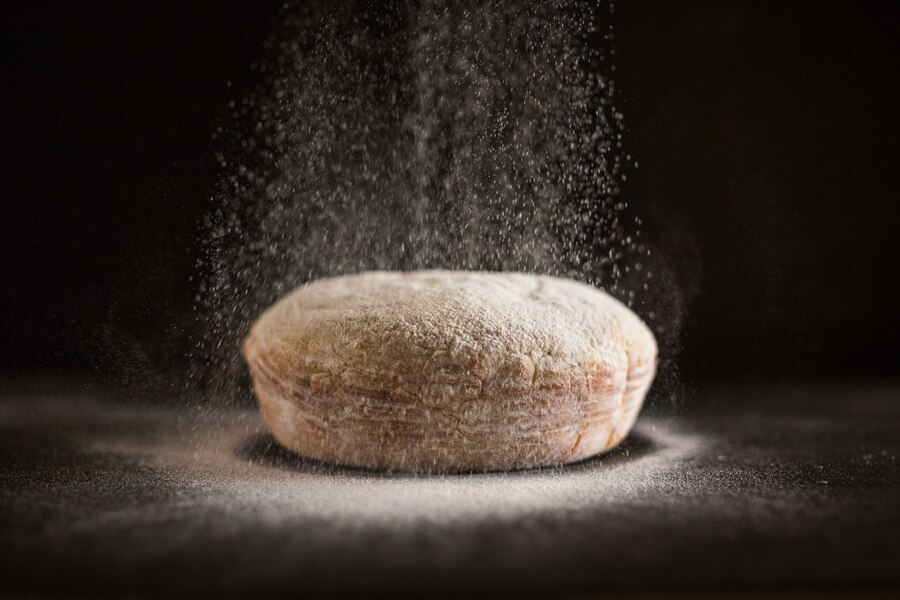

Flour
Flour:

Flour is a fine powder obtained by grinding grains, seeds, or roots. It is one of the most essential ingredients in cooking and baking, used to create the texture and structure of various foods. Flour plays a significant role in recipes such as bread, cakes, pastries, pasta, and more. It is typically made from grains like wheat, rice, or corn and contains important nutrients such as carbohydrates, protein, and small amounts of vitamins and minerals. The type of flour used in a recipe can affect the texture, taste, and nutritional value of the final product.
Wheat Flour:

Wheat flour is the most commonly used flour worldwide, and it comes in various types, each with its own purpose in cooking. All-purpose flour is the most versatile and is used for a wide range of recipes, from cakes to bread. It is a refined flour that works well for general baking needs. Bread flour has a higher protein content than all-purpose flour, which helps create chewy, structured bread, especially in recipes like baguettes or pizza dough. Cake flour has a lower protein content, making it perfect for soft and delicate cakes, as it produces a finer, lighter texture.
Gluten-Free Flour Alternatives:

For individuals with gluten intolerance or those following gluten-free diets, there are many alternative flours made from grains or other sources that do not contain gluten. Rice flour is a popular gluten-free option that is commonly used in Asian cuisine and in baking for gluten-free products. Almond flour, made from ground almonds, is high in healthy fats and protein, making it a great choice for low-carb and gluten-free baking. Coconut flour is another gluten-free option made from dried coconut meat. It has a distinct flavor and absorbs more liquid, so recipes using it may require adjustments to the amount of liquid.